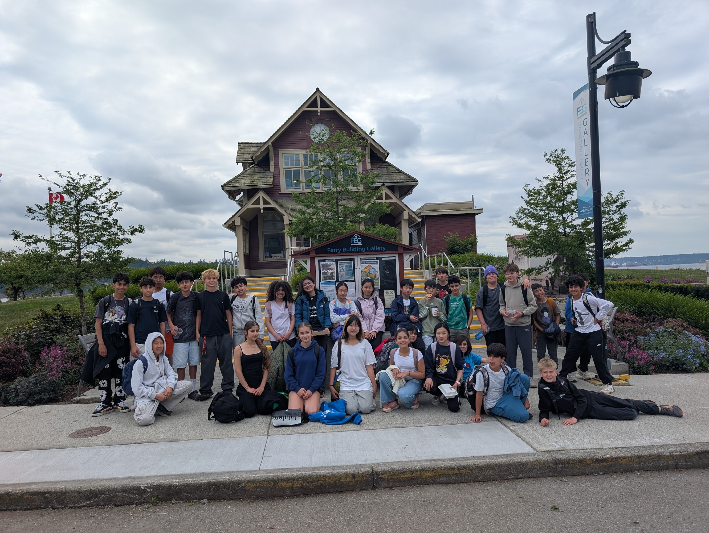
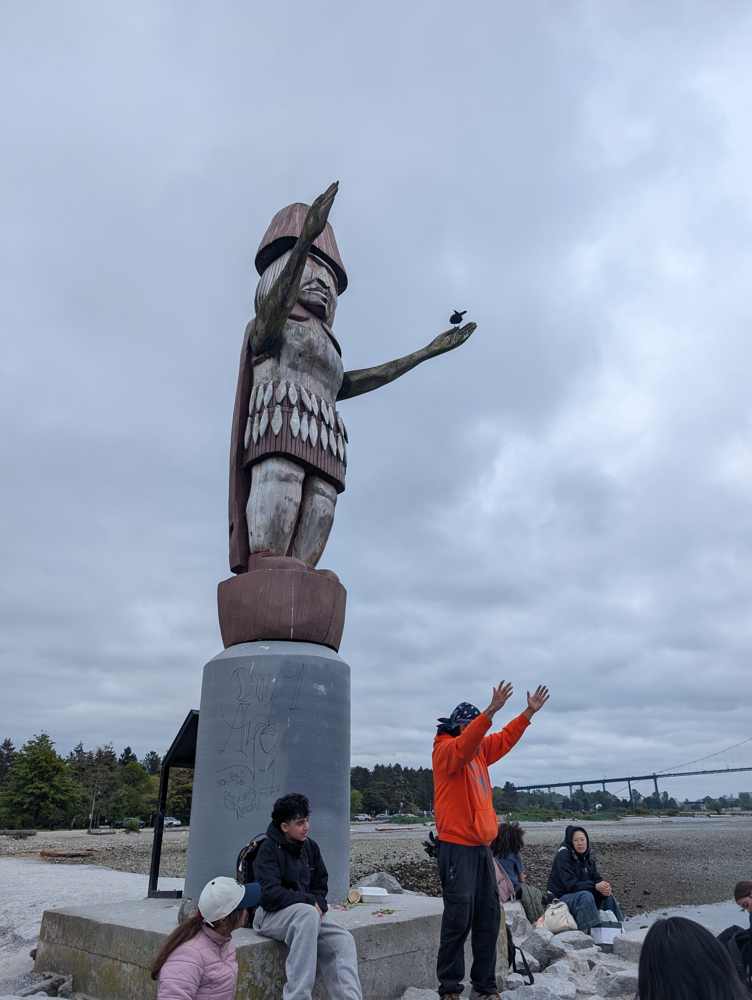
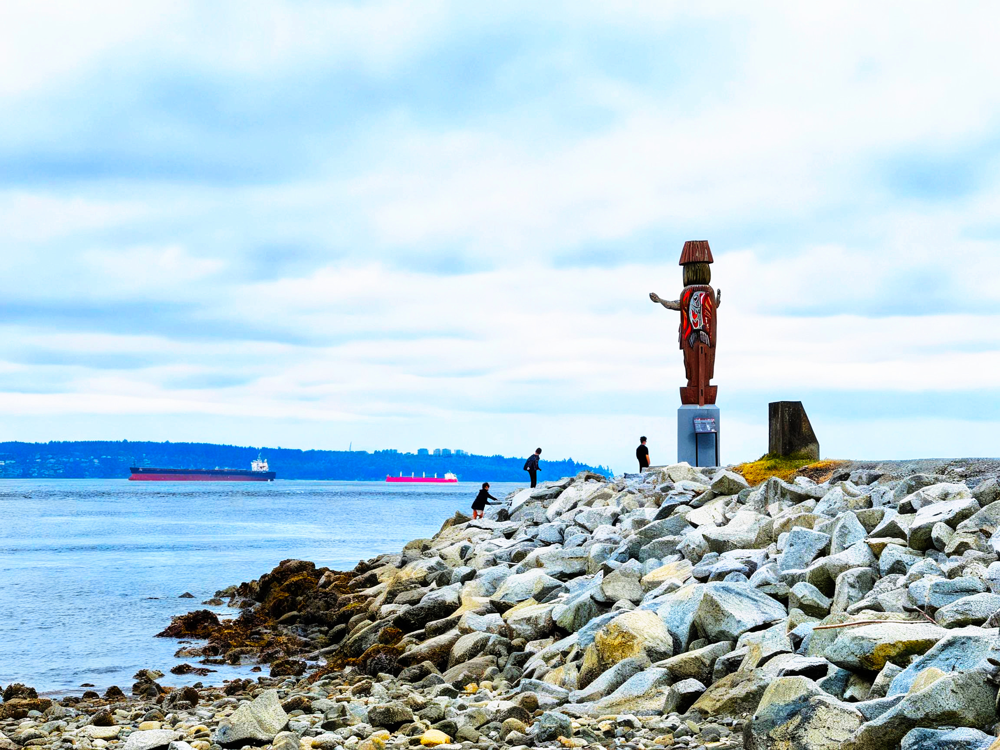

Introduction
Sea level rise is becoming an increasingly serious issue for coastal communities around the world. Scientists predict that sea levels could rise by as much as 1.4 metres by 2100. As a waterfront community, Ambleside may face flooding, shoreline erosion, damage to infrastructure, and loss of public spaces if action is not taken. This proposal outlines several solutions that could help protect Ambleside from the impacts of rising sea levels.
Proposed Solutions
01 Strengthen Waterfront Protection
The seawall and other shoreline protections should be strengthened and raised in areas that are most vulnerable to flooding. Taking action now can help reduce future damage and protect important community spaces along the waterfront.

02 Restore Natural Barriers
Natural barriers such as wetlands, coastal plants, and green spaces can help absorb excess water and reduce erosion. Expanding and protecting these areas would provide a sustainable way to defend the shoreline while also benefiting local wildlife.

03 Adapt Parks and Recreation Areas
Fields and parks located near the ocean should be prepared for future flooding. Improvements such as better drainage systems, elevated surfaces, and flood-resistant designs could help these areas remain safe and usable during extreme weather events.

04 Upgrade Infrastructure
Roads, storm drains, utilities, and public buildings should be upgraded to withstand higher water levels and stronger storms. Future developments should also be designed with climate resilience in mind.

05 Protect Transportation Routes
Marine Drive and surrounding roads are essential connections within the community. Protecting these routes from flooding should be a priority to ensure safe transportation and emergency access.

06 Encourage Community Involvement
Addressing sea level rise requires cooperation from residents, businesses, schools, local organizations, and government leaders. Public education programs and community planning initiatives can help ensure that everyone plays a role in preparing for future challenges.

Conclusion
Sea level rise presents a significant challenge for Ambleside, but there is still time to prepare. By strengthening shoreline protection, restoring natural barriers, adapting public spaces, upgrading infrastructure, and involving the community, Ambleside can reduce future risks and protect the waterfront for future generations. Taking action now will help create a safer and more resilient community in the years ahead.